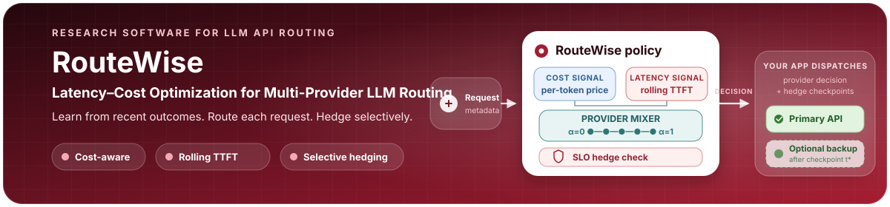

Route Within a Cost Budget
Set one alpha value from cheapest-first to latency-first. RouteWise
weighs provider prices against recent latency.
RouteWise learns from recent outcomes to choose an API provider within your cost budget, then hedges only when a request is running late.
pip install llm-routewise==0.2.0
Outcome feedbackTTFT and actual usage update the router
Built for the request path
Applications keep ownership of provider clients, credentials, and network I/O. RouteWise stays in-process and returns a decision your code can dispatch.
Set one alpha value from cheapest-first to latency-first. RouteWise
weighs provider prices against recent latency.
Report time to first token and actual usage after completion. Rolling observations keep the policy aligned with current provider behavior.
Optional checkpoints expose when a backup attempt is justified. Your application decides whether and how to dispatch it.
The published wheel has no runtime dependencies. It performs no network I/O and never reads API keys.
A tight feedback loop
RouteWise separates policy from dispatch, so it can fit into an existing provider stack without taking over credentials or requests.

Five-minute quickstart
Install the public package, define candidate providers, and dispatch the returned provider with the client code you already use.
Package note
Version 0.2.0 is an API-provider-only preview. Install
llm-routewise and import llm_routewise; the PyPI project
named routewise is unrelated and incompatible.
import llm_routewise as rw
router = rw.Router(
[
rw.Provider("fast", price_in=3.0, price_out=15.0),
rw.Provider("cheap", price_in=0.15, price_out=0.60),
],
alpha=0.25,
)
decision = router.route(input_tokens=800)
response = call_your_provider(decision.provider)
decision.completed(
ttft_ms=response.ttft_ms,
output_tokens=response.output_tokens,
)Research and reproducibility
The repository includes the simulator and experiment harnesses used by the RouteWise paper, alongside the dependency-free API-provider library.
Ready to route?